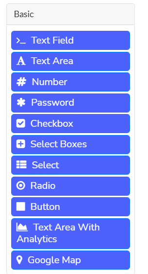
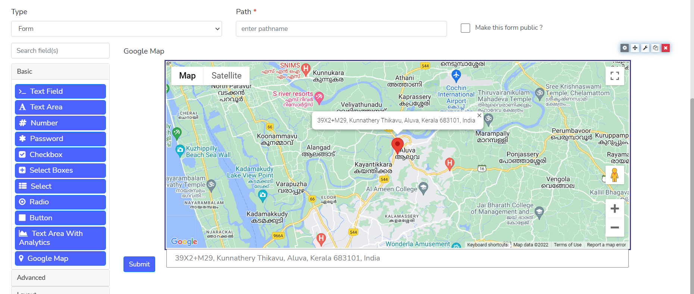
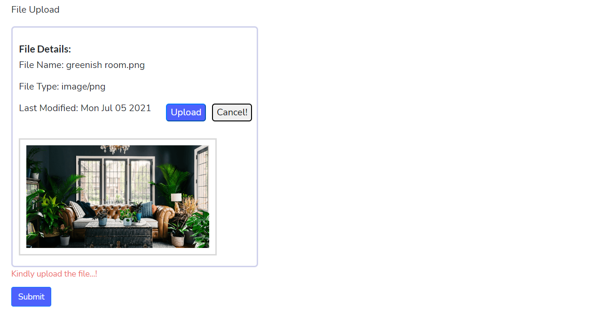
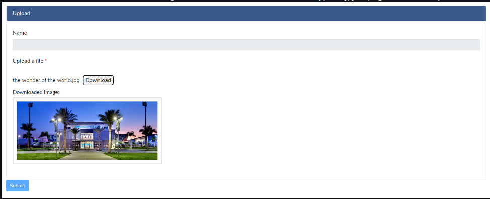

Custom Components
One of the more powerful features of the Forms-flow platform is the ability to create your own custom form components. The process of creating a custom component involves extending a Base class of the component that is "closest" to the implementation you desire, and then override methods or introduce new methods that will implement your custom logic. All of the existing components within the platform also use this same method, so you can see the multitude of examples by inspecting how the base components for the Forms-flow renderer are implemented.
In order to create the best components, it is important to understand the critical methods used to define a new component. They are as follows.
Extending Components
Every custom component will derive from a base class, whose behavior is closest to the behavior of the component you wish to create. It is possible to extend any other component within the Form.io renderer and a list of all of these components and their classes can be found @https://github.com/formio/formio.js/tree/master/src/components .
Because of this, the first task in building a custom component is to determine which component most closely resembles the behavior and data model of the component you are looking to achieve. For example, if you wish to build a multi-button select component, it may be best to start with a Radio component since this is the component that most closely resembles the behavior of the component you wish to create.
If you are unsure, then it is also fine to derive from the "core" components which serve as the base for all other components within the renderer. These core components are as follows.
| Class | Extends | Description |
|---|---|---|
| Component | Element | Base component class |
| Field | Component | Component that derives from Component class that implements a "field" render template |
| Multivalue | Field | A component that is able to implement the "multiple" configuration allowing for multiple inputs for this field type. |
| Input | Multivalue | A component type that implements an HTML value input. |
Each of the components can be extended by first referencing them from the Components.components object, and then extending them as follows.
const Input = Formio.Components.components.input;
class MyInput extends Input {
...
...
}
For the most generic components, it is fine to derive from "Component", but in most value components, you may wish to derive from the Input component.
Component Methods
Once you derive from a base component, the next step is to define methods that either override base behavior or introduce new behavior into the component class. It is recommended to look at the source code of your "base" component and the classes that it extends to understand what methods you have available to you, but the majority of all behavior can be achieved by implementing some of the following methods.
const Input = Formio.Components.components.input;
class MyComponent extends Input {
/**
* This is the default schema of your custom component. It will "derive"
* from the base class "schema" and extend it with its default JSON schema
* properties. The most important are "type" which will be your component
* type when defining new components.
*
* @param extend - This allows classes deriving from this component to
* override the schema of the overridden class.
*/
static schema(...extend) {
return Input.schema({
type: 'mycomp',
label: 'My Component',
key: 'mycomp',
});
}
/**
* This is the Form Builder information on how this component should show
* up within the form builder. The "title" is the label that will be given
* to the button to drag-and-drop on the buidler. The "icon" is the font awesome
* icon that will show next to it, the "group" is the component group where
* this component will show up, and the weight is the position within that
* group where it will be shown. The "schema" field is used as the default
* JSON schema of the component when it is dragged onto the form.
*/
static get builderInfo() {
return {
title: 'My Component',
icon: 'terminal',
group: 'basic',
documentation: '/userguide/#textfield',
weight: 0,
schema: MyComponent.schema()
};
}
/**
* Called when the component has been instantiated. This is useful to define
* default instance variable values.
*
* @param component - The JSON representation of the component created.
* @param options - The global options for the renderer
* @param data - The contextual data object (model) used for this component.
*/
constructor(component, options, data) {
super(component, options, data);
}
/**
* Called immediately after the component has been instantiated to initialize
* the component.
*/
init() {
super.init();
}
/**
* For Input based components, this returns the <input> attributes that should
* be added to the input elements of the component. This is useful if you wish
* to alter the "name" and "class" attributes on the <input> elements created
* within this component.
*
* @return - A JSON object that is the attribute information to be added to the
* input element of a component.
*/
get inputInfo() {
const info = super.inputInfo;
return info;
}
/**
* This method is used to render a component as an HTML string. This method uses
* the template system (see Form Templates documentation) to take a template
* and then render this as an HTML string.
*
* @param content - Important for nested components that receive the "contents"
* of their children as an HTML string that should be injected
* in the {{ content }} token of the template.
*
* @return - An HTML string of this component.
*/
render(content) {
return super.render('<div ref="customRef">This is a custom component!</div>');
}
/**
* The attach method is called after "render" which takes the rendered contents
* from the render method (which are by this point already added to the DOM), and
* then "attach" this component logic to that html. This is where you would load
* any references within your templates (which use the "ref" attribute) to assign
* them to the "this.refs" component variable (see comment below).
*
* @param - The parent DOM HtmlElement that contains the component template.
*
* @return - A Promise that will resolve when the component has completed the
* attach phase.
*/
attach(element) {
/**
* This method will look for an element that has the 'ref="customRef"' as an
* attribute (like <div ref="customRef"></div>) and then assign that DOM
* element to the variable "this.refs". After this method is executed, the
* following will point to the DOM element of that reference.
*
* this.refs.customRef
*
* For DOM elements that have multiple in the component, you would make this
* say 'customRef: "multiple"' which would then turn "this.refs.customRef" into
* an array of DOM elements.
*/
this.loadRefs(element, {
customRef: 'single',
});
/**
* It is common to attach events to your "references" within your template.
* This can be done with the "addEventListener" method and send the template
* reference to that object.
*/
this.addEventListener(this.refs.customRef, 'click', () => {
console.log('Custom Ref has been clicked!!!');
});
return super.attach(element);
}
/**
* Called when the component has been detached. This is where you would destroy
* any other instance variables to free up memory. Any event registered with
* "addEventListener" will automatically be detached so no need to remove them
* here.
*
* @return - A Promise that resolves when this component is done detaching.
*/
detach() {
return super.detach();
}
/**
* Called when the component has been completely "destroyed" or removed form the
* renderer.
*
* @return - A Promise that resolves when this component is done being destroyed.
*/
destroy() {
return super.destroy();
}
/**
* A very useful method that will take the values being passed into this component
* and convert them into the "standard" or normalized value. For exmample, this
* could be used to convert a string into a boolean, or even a Date type.
*
* @param value - The value that is being passed into the "setValueAt" method to normalize.
* @param flags - Change propogation flags that are being used to control behavior of the
* change proogation logic.
*
* @return - The "normalized" value of this component.
*/
normalizeValue(value, flags = {}) {
return super.normalizeValue(value, flags);
}
/**
* Returns the value of the "view" data for this component.
*
* @return - The value for this whole component.
*/
getValue() {
return super.getValue();
}
/**
* Much like "getValue", but this handles retrieving the value of a single index
* when the "multiple" flag is used within the component (which allows them to add
* multiple values). This turns a single value into an array of values, and this
* method provides access to a certain index value.
*
* @param index - The index within the array of values (from the multiple flag)
* that is getting fetched.
*
* @return - The view data of this index.
*/
getValueAt(index) {
return super.getValueAt(index);
}
/**
* Sets the value of both the data and view of the component (such as setting the
* <input> value to the correct value of the data. This is most commonly used
* externally to set the value and also see that value show up in the view of the
* component. If you wish to only set the data of the component, like when you are
* responding to an HMTL input event, then updateValue should be used instead since
* it only sets the data value of the component and not the view.
*
* @param value - The value that is being set for this component's data and view.
* @param flags - Change propogation flags that are being used to control behavior of the
* change proogation logic.
*
* @return - Boolean indicating if the setValue changed the value or not.
*/
setValue(value, flags = {}) {
return super.setValue(value, flags);
}
/**
* Sets the value for only this index of the component. This is useful when you have
* the "multiple" flag set for this component and only wish to tell this component
* how the value should be set on a per-row basis.
*
* @param index - The index within the value array that is being set.
* @param value - The value at this index that is being set.
* @param flags - Change propogation flags that are being used to control behavior of the
* change proogation logic.
*
* @return - Boolean indiciating if the setValue at this index was changed.
*/
setValueAt(index, value, flags = {}) {
return super.setValueAt(index, value, flags);
}
/**
* Similar to setValue, except this does NOT update the "view" but only updates
* the data model of the component.
*
* @param value - The value of the component being set.
* @param flags - Change propogation flags that are being used to control behavior of the
* change proogation logic.
*
* @return - Boolean indicating if the updateValue changed the value or not.
*/
updateValue(value, flags = {}) {
return super.updateValue(...args);
}
}
Component Modules
Custom components can be registered with the renderer using a module that is also able to include a large number of components
These components can then be included in the module by creating an export of these components like so.
import components from './components';
import templates from './templates';
export default {
components,
templates
};
Using Custom Components in applications
Once these components are created as a module, they can then easily be added to the renderer using the Formio.use method as follows.
import { Formio } from 'formiojs';
import YourModule from './yourmodule';
Formio.use(YourModule);
Once this is done, any new components that have been added to the renderer / builder will show up and can be used.
Examples
- Google Map integration.
- Custom file upload component
We have created a custom component integrating the google map. The Google map API Key can be called from .env file and thus you need to include the key in the .env file like
REACT_APP_GOOGLE_MAP_URL="YOUR GOOGLE MAP API KEY HERE" The last compnet in the below image is the one which we created as the new custom component for “Google Map”.
And the resultant component will look like this
Follow the link for further references and code base for the implementation Google map service as a custom component:
https://github.com/AOT-Technologies/forms-flow-ai-examples/tree/main/custom-components/google-map-componentWe have created a custom component for file upload for the customization of the file upload where we can upload the files and save the data in a different database( maybe our own separate database). Usually we save the file data in the space provided by the form.io, by implementing the custom file upload, we can save the data in our own space.
The File upload component UI will look like
We can download the file from our directory using the file name saved in form.io server. In this case we have to add the server details in the .env file to which we have to send the file data.

Refer to the code base for further reference.
https://github.com/AOT-Technologies/forms-flow-ai-examples/tree/main/custom-components/custom-file-uploadhttps://help.form.io/developers/custom-components